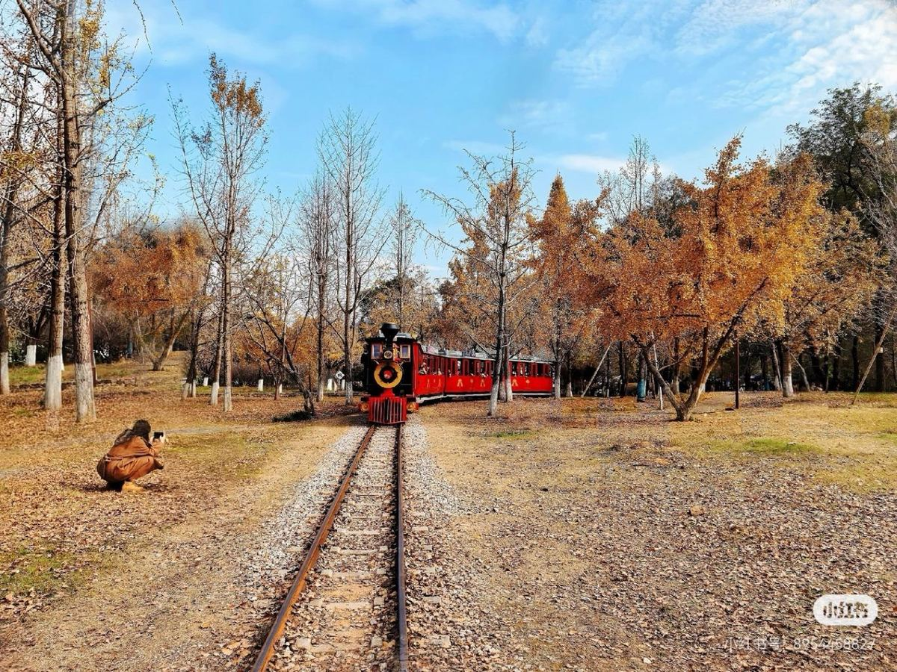
上午到长兴看 「江南小延安」，中午在仰峰村吃一顿本地农家餐，下午去八都岕走金黄色的银杏长廊， 17:30 从景区发车返杭。全程 约 290 公里，行车累计约 5 小时，节奏不赶。
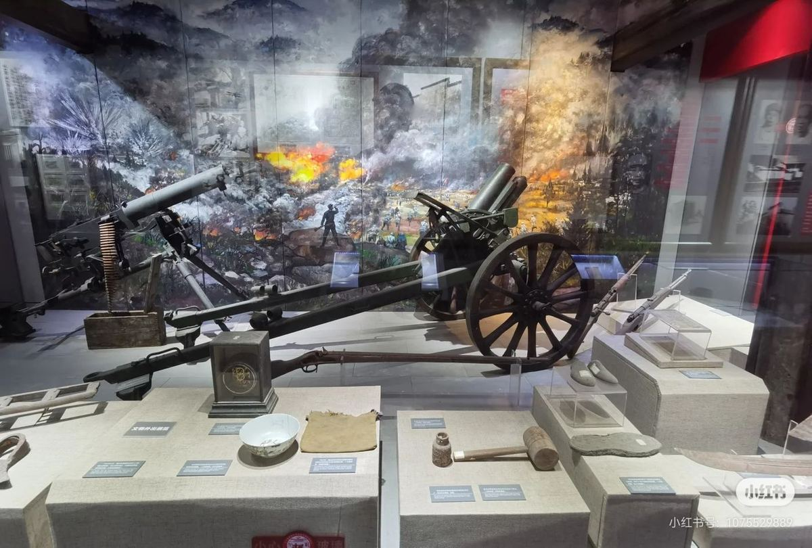
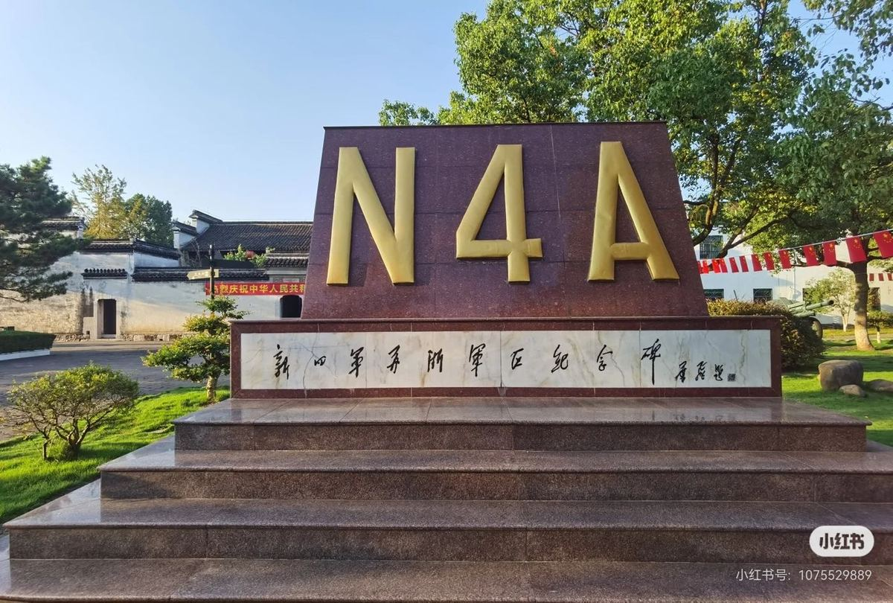
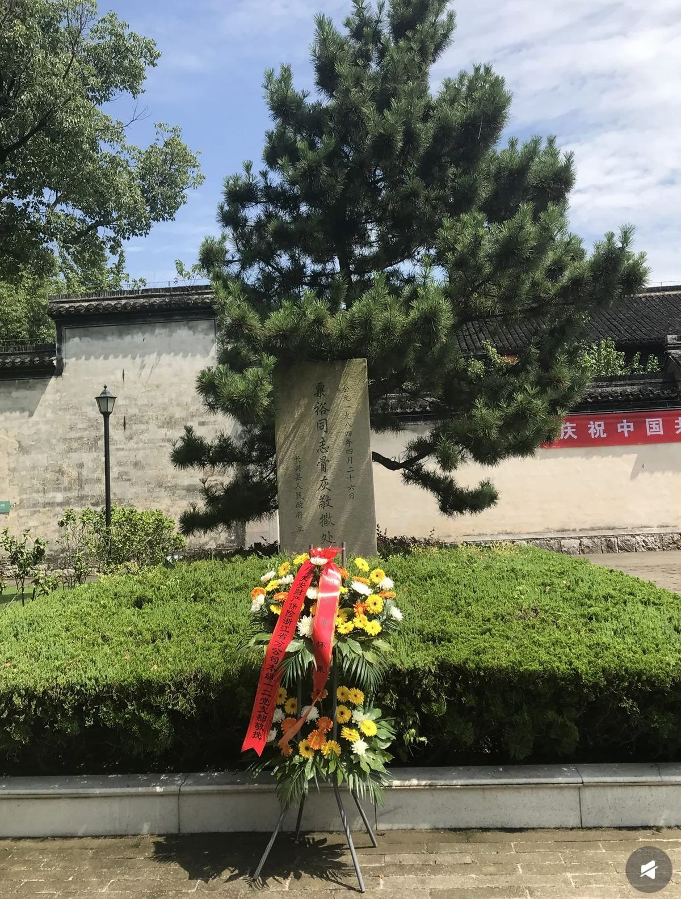
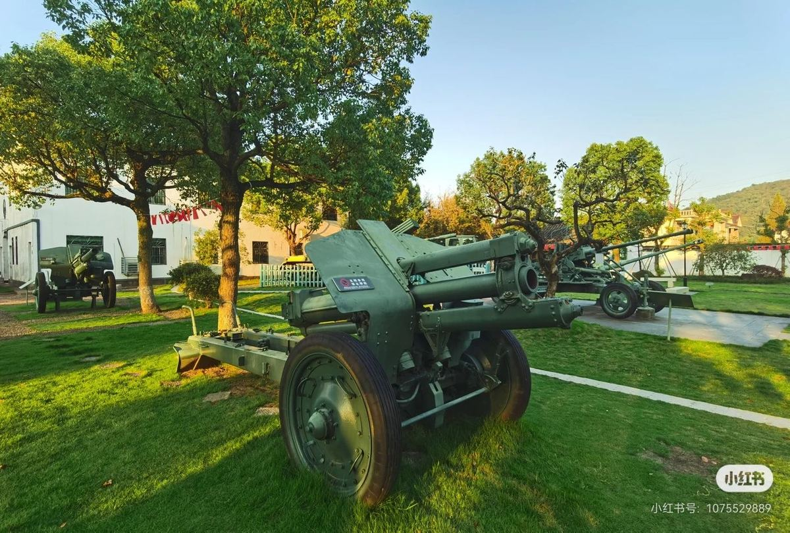
长兴被称为 「江南小延安」。1945 年 1 月 13 日，中央军委电令成立新四军苏浙军区，粟裕任司令员， 统一指挥苏南、浙西、浙东、皖南党政军工作，军区辖 4 个纵队、兵力逾 2.3 万人，建立了 14 个县级抗日民主政权， 是抗战后期华中敌后的重要战略支点，从这里走出了 52 位共和国将军。
纪念馆本身是清代咸丰年间的民宅，150 余年历史，四面高墙、前后两进五开间的走马楼，共 46 间房。 展陈分《浙西丰碑》《红色标杆》《红色记忆》三部分，展出文物 130 余件、军事武器 35 件、珍贵照片 240 余幅。
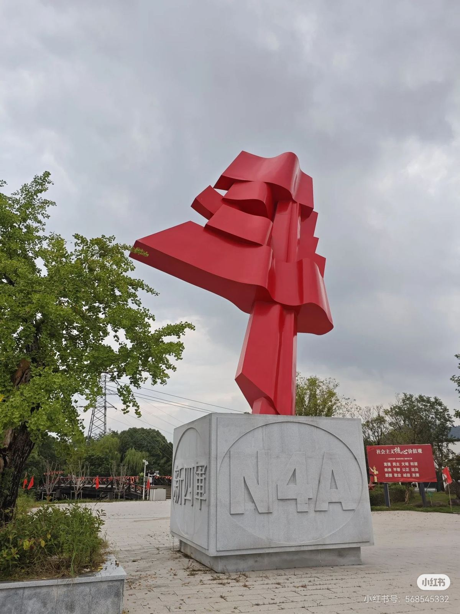
纪念馆的配套服务设施，也是苏浙军区旧址群的重要组成部分。徽派风格建筑群，俯瞰呈 「N4A」 造型。
广场上立着一座红色的抽象雕塑，基座侧面刻着「新四军」与 N4A 大字，是红村最好认的地标， 也是团队照的第一站。
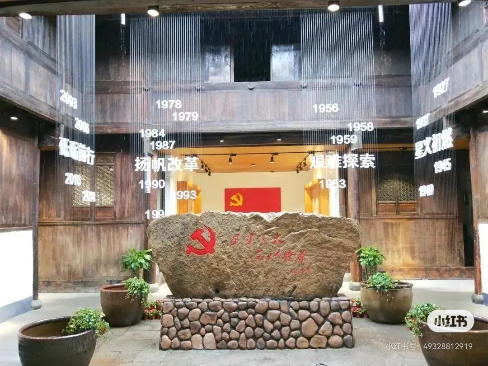
穿过门厅是建筑的中心——一方天井。正中巨石上刻着党徽，两侧垂下成排的玻璃光帘，帘上悬着 1921 到 2021 的年份，从「星火初燃」到「艰难探索」「扬帆改革」，把百年党史串成一条时间线， 尽头是一面党旗。木构两层回廊四面围合，光线从头顶落下来，是红村最耐看、也最适合拍集体照的地方。
以司令部为中心，星状分布在槐坎、白岘一带近百平方公里的山坳里。除了司令部与粟裕住所， 多数是藏在自然村里的民宅，没有展陈、无人值守，看的是房子本身和它所在的那条山沟。 按你们半天的节奏，建议只顺路看「司令部 + 粟裕宿舍」，其余当背景知识了解即可。
军区供给部在原十六旅被服厂基础上扩建。敌人封锁买不到纽扣，一名战士用毛竹削成竹片纽扣钉在军衣上，漂亮耐用，全军仿效，竹纽扣成了苏浙军区军衣的一大特色。
藏在山涧边的老屋里，负责修理马克沁、捷克式重机枪等枪械，与石臼村兵工厂配套。当年这一带机械声、金属敲击声叮叮当当，被军民叫作「我们这儿的延安」。
1945 年 2 月随军区迁此办公，管根据地政权建设。同期筹建江南印钞厂、江南银行，发行壹元、伍元、拾元抗币，老百姓拿着贬值的法币来兑换。屋旁有一棵百年银杏。
粟裕要求「战士必须有饭吃，还要有衣服、鞋子穿，这样才有战斗力」，供给部因此办起鞋子厂。战斗间隙，根据地出现南泥湾式的军民大生产场面。
粟裕在此住了十个月，住在第三进二楼西侧，里间卧室、外间办公室，用的是房东的雕花木床、三屉桌、竹靠椅、油盏灯，取暖的火盆是一只破铁锅。天目山三次反顽战役的决策就出自这间屋子。
清光绪年间的徽派建筑，坐西朝东、背靠仰峰岭，前后三进五开间两层楼加左右侧房，沈家三兄弟所建。1944 年冬王必成驻扎于此，粟裕到后让出作司令部，自己移驻 4 公里外的温塘。
王必成的纵队部，就在纪念馆同一个村子里，步行可达。1945 年 2 月 10 日夜，一纵由此出发向莫干山挺进，此后参加天目山三次反顽战役。
1945 年 2 月 22 日创办的「抗大」式学校，粟裕兼校长，设军事、经济、文化三系，两期学员 1400 余名，编七个中队含一个女生队。学员睡竹榻、坐竹椅、点竹片灯、写竹枝笔，戏称「竹子世界打天下」。
与县抗日民主政府同村相邻，不远处就是新槐煤矿。县委在此领导根据地的组织建设与群众动员，是「江南小延安」党政体系落地的一环。
县级抗日民主政权机关，与县委合署办公，承担根据地行政、征粮与支前工作。两处旧址隔路相望，可一并看外观。
实用提示：这十处里，经修复布展、常态对外开放的只有司令部、一纵队司令部、粟裕宿舍及办公室三处， 其余多数是自然村里的民宅外观，门常常是锁着的，且分散在不同山沟、彼此车程十几分钟。 你们上午只有 100 分钟，不建议专程去白岘方向找厂址；想去司令部，最顺的是把它并进「纪念馆 → 仰峰村午餐」这一段。
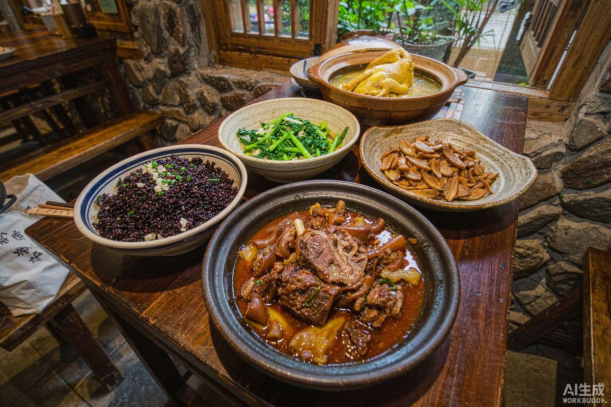
仰峰村是省级农家乐特色村，森林覆盖率 80% 以上，村口到纪念馆开车只要 8 分钟。这条沟里散着十几家农家乐， 其中 仰峰农家乐 规模最大、有独立包间和院内停车，10 人的团队桌餐好安排，大巴掉头也不费劲。
菜式是长兴山里的家常路子：土鸡煲、笋干老鸭、红烧肉、溪鱼、番薯粉、山上青菜， 主食是本地米，饭后可以要一壶当地的白茶。想加硬菜的话，提前一天说，村里能订到牛头。
仰峰村 162 号，招牌牛头，10 人半个牛头正好。牛头要煮 3–7 小时，必须提前一天订。13757228165
仰峰村 161 号，腾讯地图 4.1 分，门面不大、以散客为主，10 人需提前问能否拼桌。13665750994
华东少见的古银杏集中地。银杏就长在村民房前屋后，白墙黛瓦半掩在金色树冠下，落叶铺满柏油路和青石板。 今年官方口径是最佳观赏期 11 月中旬至 12 月初，11 月 20 日前后全域金黄——21 日去，正踩在巅峰上。
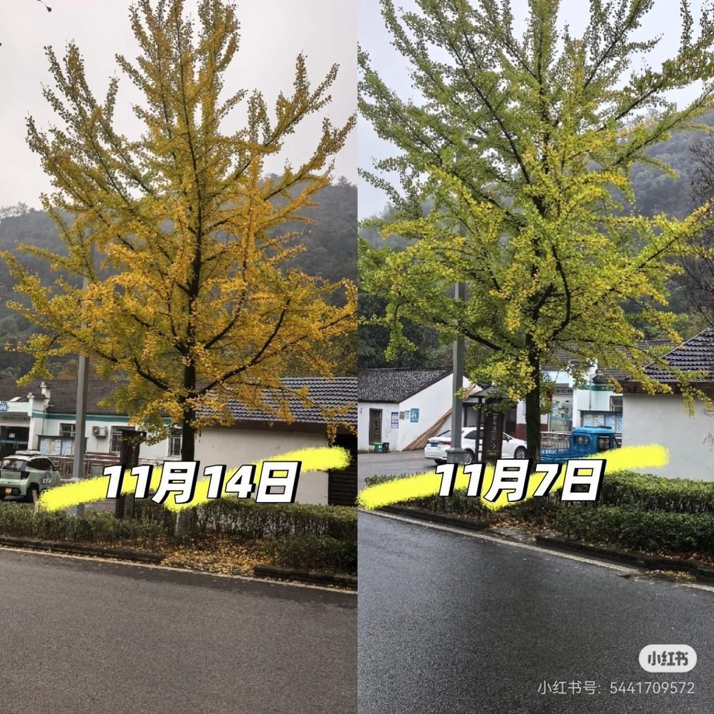
同一棵树，11 月 7 日还是黄绿交错，到 11 月 14 日已经是整树金黄。 按这个节奏，21 日进谷时叶色基本全黄，正处在「树上满金、地上开始铺叶」的状态。
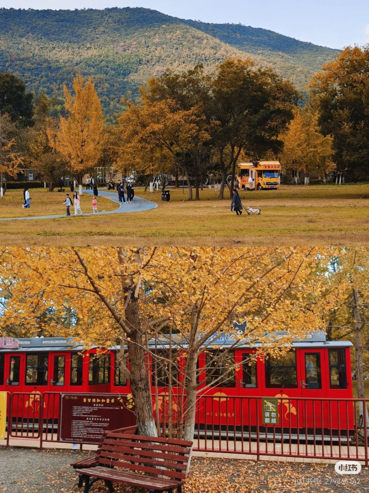
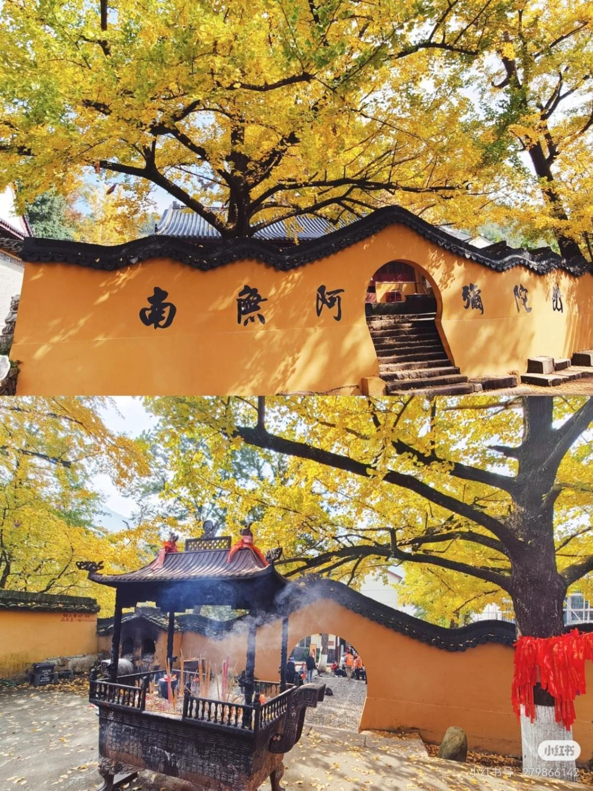
时间提示：景区 16:30 停止入园、17:00 闭园。14:40 进园后只有约 2 小时， 建议只走「空王教寺—八都堰—银杏王—老街」这条精简线，不要贪多。 21 日是周六，上午是入园高峰，你们下午两点半以后到，人流正好开始回落，反而是好时段。
| 项目 | 说明 | 单价 | 小计 |
|---|---|---|---|
| 包车 | 19–23 座考斯特，全天包干价（含路桥、超里程、司机餐补） | — | 2,000–2,400 |
| 纪念馆 | 免费开放，需预约；讲解若选收费档约 100–200 元/场 | 0 | 0–200 |
| 江南红村 | 免费开放，无需购票 | 0 | 0 |
| 午餐 | 仰峰农家乐，10 人团队桌餐，60–70 元/人标准 | 70 | 700 |
| 八都岕 | 景交车联票 50 元/人（大门票 + 当天不限次景交车） | 50 | 500 |
| 保险 | 一日游意外险 | 15 | 150 |
| 物资 | 饮用水、简易药箱、横幅 | — | 100 |
| 合计 | 不含小火车（+30 元/人）与玻璃桥（+60 元/人） | — | 3,450–4,050 |
| 人均 | 10 人分摊 | — | 约 345–405 |
省钱要点：上午的纪念馆和江南红村都免费开放，全天门票支出只有八都岕的联票 500 元，大头是车和餐。 10 人不必包 33 座大巴，19–23 座考斯特便宜 400–600 元，且在八都岕旺季更容易找到车位。 包车合同要写清「含不含路桥费、超里程与超时如何计费」——本行程实际约 12.5 小时、 290 公里，远超 8 小时 / 100 公里的标准套餐，这三项是加价高发区。
免费但不接待未预约团队。提前 3–5 天在「长兴县新四军苏浙军区纪念馆」公众号或浙里办预约，同时申请讲解。电话 0572-6078039。
仰峰农家乐 提前一天订 10 人桌，讲清「12:45 到、人均 60–75 元、要包间」。0572-6789818。当天上午再电话确认一次。
21 日是银杏巅峰期叠加周六，是全年最挤的一天。线上先买好票、进园就坐景交车到最深处，别在入口逗留拍照。
八都岕严禁大巴驶入长廊，一律停游客中心。提前打 0572-6071888 报备团队与车辆，确认大车停车位置。
景区 16:30 停止入园、17:00 闭园。13:45 必须从餐厅出发，否则下午时间会被压缩到不足 1.5 小时。
银杏落叶与落果在青石板路上极滑，务必穿防滑平底鞋。21 日 5–13℃，山区早晚温差大，带一件薄外套。
若 21 日转雨或风力达 4 级以上，整体顺延到 22 日，时间安排不变。两日都不可行时，下午改大唐贡茶院（水口乡，75 元含茶，0572-6552777）。
长廊跨度 12.5 公里，景区内信号一般。两人一组、定点集合，每段结束清点人数，随身存领队与景区电话。